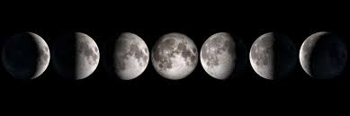

De maan vertoont schijngestalten doordat gewoonlijk slechts een gedeelte
van het van de aarde af zichtbare maanoppervlak door de zon wordt
verlicht. Tijdens nieuwe maan als de maan en de zon, vanaf de aarde
gezien, samenstaan (in conjunctie staan), is de donkere helft naar de
aarde gekeerd. De volgende avonden staat bij zonsondergang een smalle
maansikkel aan de westelijke hemel; na ongeveer een week is de boogafstand
(elongatie, de hoek tussen de lijnen aarde-zon en aarde-maan) tot de zon
toegenomen tot ca. 90 graden en is de sikkel tot een halve cirkel geworden
(eerste kwartier). Nog een week later is zij zover naar het oosten gelopen
dat de maan bij zonsondergang opkomt en vol is geworden. Weer een week
later komt de maan pas omstreeks middernacht op en is nog maar voor de
helft verlicht (laatste kwartier). Daarna komt zij steeds later op en
neemt steeds meer af om ten slotte alleen nog aan de oostelijke
morgenhemel, vlak voor zonsopkomst, als een smal sikkeltje zichtbaar te
zijn. Deze totale cyclus duurt 29,530588 dagen.
Wanneer de volle maan 'perfect' is, en de zon, aarde en maan precies op één lijn staan, is er
een maansverduistering: De maan komt dan precies in de schaduw van de
aarde te staan. Hierdoor valt er geen zonlicht op de maan. De maan wordt
nooit helemaal donker, omdat een kleine hoeveelheid zonlicht door de
aardatmosfeer de maan bereikt. De maan krijgt een rode kleur. In het geval
van nieuwe maan kan er op overeenkomstige wijze een zonsverduistering
ontstaan. Dan werpt de maan haar schaduw op de aarde
